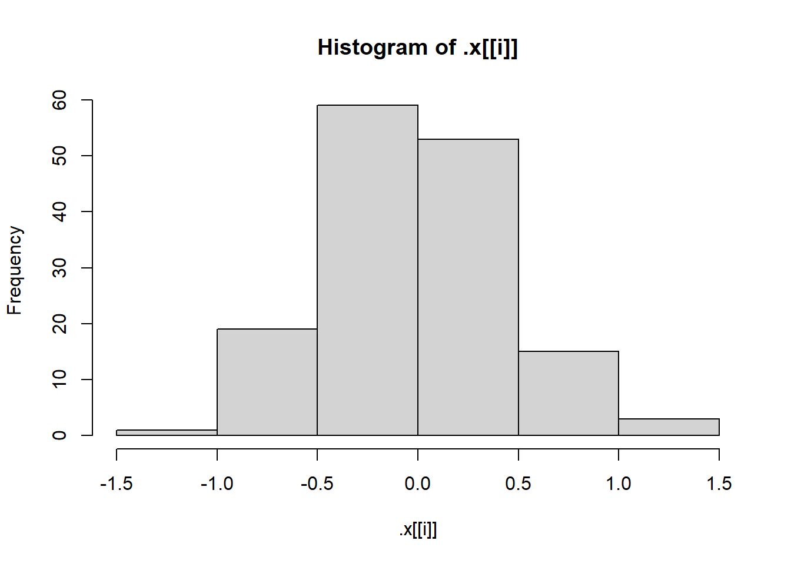

getRMSE <- function(x, y, na.rm = TRUE, ...) {
residuals <- x - y
rmse <- sqrt(mean(residuals^2, ...))
return(rmse)
}homework6
Task 1: Conceptual Questions
- What is the purpose of lapply() function? What is the equivalent purrr funtion?
- The purpose of lapply() is to apply a function to a list. The equivalent purrr function is map().
- Suppose we have a list called my_list. Each element of the list is a numeric data frame (all columns are numeric). We want to use lapply() to run the code or cor(numeric_matrix, method = “kendall”) on each element of the list. Write code to do this below.
- lapply(my_list, function(x) cor(numeric_matrix, method = “kendall”))
- Whar are two advantages of using purrr functions instead of BaseR apply family?
- Two advantages of using the purrr functions instead of BaseR apply family is that there is more consistency and some helper functions. Also almost every purrr function is type stable(you can predict the output type exclusively from the function name).
- What is a side-effect function?
- a side effect function is a function that doesn’t change the data but produces something some examples are print(), read_csv(), and plot().
- Why can you name a variable sd in a function and not cause any issues with the sd function?
- You can name a variable sd in a function and not cause any issues with the sd function because when you call a function it creates a temporary function environments.
Task 2: Writing R Functions
When we start doing machine learning later in the course, a common metric used to evaluate predictions is called Root Mean Square Error (RMSE). For a given set of responses _*y1,…,yn the RMSE is defined as
Write a basic function (call it getRMSE()) that takes in a vector of responses and a vector of predictions and outputs RMSE - If a value is missing for the vector of responses (i.e. an NA is present), allow for additional arguments to the mean() function (elipses) that removes the NA values in the computation
write code here
- Run the following code to create some response values and predictions loading libraries
library(tidyverse)Warning: package 'tidyverse' was built under R version 4.5.1Warning: package 'ggplot2' was built under R version 4.5.1Warning: package 'tibble' was built under R version 4.5.1Warning: package 'tidyr' was built under R version 4.5.1Warning: package 'readr' was built under R version 4.5.1Warning: package 'purrr' was built under R version 4.5.1Warning: package 'dplyr' was built under R version 4.5.1Warning: package 'stringr' was built under R version 4.5.1Warning: package 'forcats' was built under R version 4.5.1Warning: package 'lubridate' was built under R version 4.5.1── Attaching core tidyverse packages ──────────────────────── tidyverse 2.0.0 ──
✔ dplyr 1.1.4 ✔ readr 2.1.5
✔ forcats 1.0.0 ✔ stringr 1.5.1
✔ ggplot2 3.5.2 ✔ tibble 3.3.0
✔ lubridate 1.9.4 ✔ tidyr 1.3.1
✔ purrr 1.1.0
── Conflicts ────────────────────────────────────────── tidyverse_conflicts() ──
✖ dplyr::filter() masks stats::filter()
✖ dplyr::lag() masks stats::lag()
ℹ Use the conflicted package (<http://conflicted.r-lib.org/>) to force all conflicts to become errorslibrary(purrr)
library(jsonlite)Warning: package 'jsonlite' was built under R version 4.5.1
Attaching package: 'jsonlite'
The following object is masked from 'package:purrr':
flattenset.seed(10)
n <- 100
x <- runif(n)
resp <- 3 + 10 * x + rnorm(n)
pred <- predict(lm(resp ~ x), data.frame(x))test RMSE function using this data
getRMSE <- function(resp, pred, ...) {
residuals <- resp - pred
rmse <- sqrt(mean(residuals^2, ...))
return(rmse)
}
getRMSE(resp, pred)[1] 0.9581677test again after manually replaces two of the response values with missing values (NA_real_)(just assign two values to NA_real_)
Test RMSE function with and without specifying the behavior to deal with missing values
#testing with specifying dealing with missing values
resp <- c(1,2, NA, 5)
pred <- c(4, 8, 12, 16)
getRMSE(resp, pred, na.rm = FALSE)[1] NA#testing without specifying how to deal with missing values
resp <- c(1,2, NA, 5)
pred <- c(4, 8, 12, 16)
getRMSE(resp, pred, na.rm = TRUE)[1] 7.438638Another common metric for evaluating predictions is mean absolute deviation given by
Write a function called getMAE() that follows the specifications of the getRMSE() function
getMAE <- function(resp, pred, ...) {
residuals <- resp - pred
mae <- sqrt(mean(residuals^2, ...))
return(mae)
}
getMAE(resp, pred)[1] NA- Run the following code to create some response values and predictions
set.seed(10)
n <- 100
x <- runif(n)
resp <- 3 + 10 * x + rnorm(n)
pred <- predict(lm(resp ~ x), data.frame(x))Test MAE function using this data
getMAE <- function(resp, pred, ...) {
residuals <- abs(resp - pred)
mae <- mean(residuals, ...)
return(mae)
}
getMAE(resp, pred)[1] 0.8155776Repeat after replacing two of the response values with missing values (NA_real_) - Test MAE function with and without specifying the behavior to deal with the missing values
#Testing with specifying how to deal with missing values
resp <- c(1,2, NA, 5)
pred <- c(4, 8, 12, 16)
getMAE(resp, pred, na.rm = TRUE)[1] 6.666667#Testing without specifying how to deal with missing values
resp <- c(1,2, NA, 5)
pred <- c(4, 8, 12, 16)
getRMSE(resp, pred, na.rm = FALSE)[1] NA- Lets create a wrapper function that can be used to get either or both metrics returned with a single function call. DO not rewrite your above two functions, call them inside the wrapper function (we would call getRMSE() and getMAE() functions helper functions). When returning your values, give them appropriate names additionally the wrapper function should
- check that the two numeric(atomic) vectors have been passes (consider is.vector(), is.atomic() and is.numeric()). If not, the function should stop and print an informative message.
- Return both metrics by default and include names. The behavior should be able to be changed using a character string of metrics to find
getMetrics <- function(resp, pred, metric = c("RMSE", "MAE"), ...) {
# Check that data is numeric/atomic
if (!is.numeric(resp) || !is.numeric(pred))
stop("Both variables must be numeric.")
# Compute requested metrics
result <- c()
if ("RMSE" %in% metric) result["RMSE"] <- getRMSE(resp, pred, ...)
if ("MAE" %in% metric) result["MAE"] <- getMAE(resp, pred, ...)
return(result)
}- Run the following code to create some response values and predictions
set.seed(10)
n <- 100
x <- runif(n)
resp <- 3 + 10 * x + rnorm(n)
pred <- predict(lm(resp ~ x), data.frame(x))Test your new function using this data. Call it once asking for each metric individually and once specifying both metrics
getMetrics(resp, pred, na.rm = FALSE) RMSE MAE
0.9581677 0.8155776 Repeat with replacing two of the response values with missing values (NA_real_)
resp[1:2] <- NA_real_Finally, test your function by passing it incorrect data (i.e. a data frame or something else instead of vectors)
getMetrics(resp, pred)RMSE MAE
NA NA Task 3: Practice with purrr
import purrr
library(purrr)Let’s create an interesting list object we can play around with
lm_fit1 <- lm(Sepal.Length ~ Sepal.Width + Species, data = iris)- pull of the coefficients list element using $, coef(), and the pluck() function from purrr
lm_fit1$coefficients (Intercept) Sepal.Width Speciesversicolor Speciesvirginica
2.2513932 0.8035609 1.4587431 1.9468166 coef(lm_fit1) (Intercept) Sepal.Width Speciesversicolor Speciesvirginica
2.2513932 0.8035609 1.4587431 1.9468166 lm_fit1 |>
pluck(coefficients) (Intercept) Sepal.Width Speciesversicolor Speciesvirginica
2.2513932 0.8035609 1.4587431 1.9468166 lets fit a number of different models with the code below
lm_fit2 <- lm(Sepal.Length ~ Sepal.Width, data = iris)
lm_fit3 <- lm(Sepal.Length ~ Petal.Width + Sepal.Width + Species, data = iris)
lm_fit4 <- lm(Sepal.Length ~ Petal.Width + Petal.Length + Sepal.Width + Species,
data = iris)
fits <- list(lm_fit1, lm_fit2, lm_fit3, lm_fit4)Now let’s use the purrr::map() function to pull out the coefficients of each model fit from the fits object(using pluck!)
map(fits, confint)[[1]]
2.5 % 97.5 %
(Intercept) 1.5206309 2.982156
Sepal.Width 0.5933983 1.013723
Speciesversicolor 1.2371791 1.680307
Speciesvirginica 1.7491525 2.144481
[[2]]
2.5 % 97.5 %
(Intercept) 5.579865 7.47258038
Sepal.Width -0.529820 0.08309785
[[3]]
2.5 % 97.5 %
(Intercept) 1.74261803 3.2995285
Petal.Width -0.02042746 0.7635811
Sepal.Width 0.46205710 0.9343950
Speciesversicolor 0.44520784 1.5310516
Speciesvirginica 0.46412393 2.0110518
[[4]]
2.5 % 97.5 %
(Intercept) 1.6182321 2.72430044
Petal.Width -0.6140049 -0.01630542
Petal.Length 0.6937939 0.96469395
Sepal.Width 0.3257653 0.66601260
Speciesversicolor -1.1982739 -0.24885002
Speciesvirginica -1.6831329 -0.36386273- There is a function called confint() that creates confidence intervals for the coefficients in an lm()fit. We apply that function directly to the fitted object like this:
confint(lm_fit1) 2.5 % 97.5 %
(Intercept) 1.5206309 2.982156
Sepal.Width 0.5933983 1.013723
Speciesversicolor 1.2371791 1.680307
Speciesvirginica 1.7491525 2.144481Use map() to apply cofint() function to each model in the fits object
map(fits, confint)[[1]]
2.5 % 97.5 %
(Intercept) 1.5206309 2.982156
Sepal.Width 0.5933983 1.013723
Speciesversicolor 1.2371791 1.680307
Speciesvirginica 1.7491525 2.144481
[[2]]
2.5 % 97.5 %
(Intercept) 5.579865 7.47258038
Sepal.Width -0.529820 0.08309785
[[3]]
2.5 % 97.5 %
(Intercept) 1.74261803 3.2995285
Petal.Width -0.02042746 0.7635811
Sepal.Width 0.46205710 0.9343950
Speciesversicolor 0.44520784 1.5310516
Speciesvirginica 0.46412393 2.0110518
[[4]]
2.5 % 97.5 %
(Intercept) 1.6182321 2.72430044
Petal.Width -0.6140049 -0.01630542
Petal.Length 0.6937939 0.96469395
Sepal.Width 0.3257653 0.66601260
Speciesversicolor -1.1982739 -0.24885002
Speciesvirginica -1.6831329 -0.36386273- Next, let’s create histograms of the residuals in each model fit! Run the code here to set up a 2x2 plotting window
par(mfrow = c(2, 2))Now, pull out the residual vectors (the resid elements of your fits) using map(). Then use the walk() function with hist to create plots
residuals <- map(fits, resid) |>
walk(hist)


- That was cool! However, the names stink… Let’s try to fix that! On the list that is created from the map() function used on the resid element, use the purrr::set_names() function to give the names “fit1”, “fit2”, “fit3”, and “fit4” to the list elements.
set_names(c('fit1', 'fit2', 'fit3', 'fit4')) fit1 fit2 fit3 fit4
"fit1" "fit2" "fit3" "fit4" With the names set, we now want to use the walk() function. However, it doesn’t add the names appropriately! (Try it yourself.)
par(mfrow = c(2,2))
walk(residuals, ~ hist(.x, main = "Residuals"))Instead, we want to use iwalk(). This is a function under the imap() help
residuals |>
set_names(c('fit1', 'fit2', 'fit3', 'fit4')) |>
iwalk(\(x, names) hist(x, main = paste('Residuals for', names)))